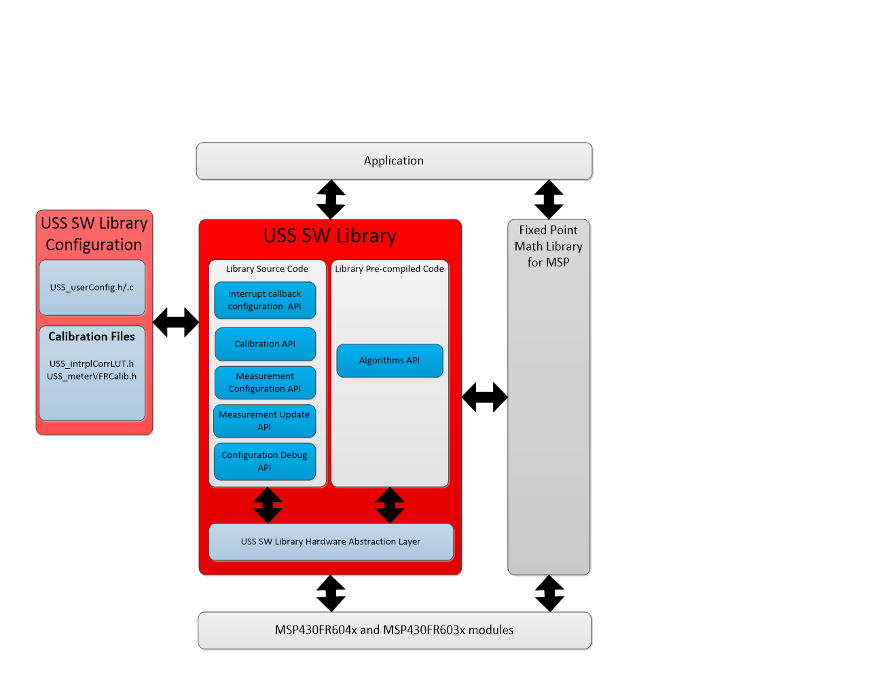

Understanding the Ultrasonic Sensing Solution Library¶
Software Architecture¶
The USS SW Library is split into three main components:
- Precompiled code - Enables running the pre-define set of algorithms developed by Texas Instruments to calculate DtoF, AToF and volume flow rate.
- Source code -
- Enables configuration of USS and USS_A module for ultrasonic firing and capture sequences
- If running the library on EVM430-FR6043 it allows users to control external circuitry on the EVM.
- USS SW Library Configuration files - The following files allows configuration of the library in addition to calibration files. For more information regarding modifying the library configuration file please refer to Modifying USS SW Library Configuration files
The image below shows the software architecture of the library.

Fig. 1 USS SW Library Architecture
Folder Structure¶
From the root directory, the following folders are available:
- docs/ - Contains all documentation related to the USS SW Library plugin
- examples/ - Contains all of the code examples and their IDE project files
- include/ - Contains USS SW Library in addition to IQmathLib and QmathLib header files
- lib/ - Contains the following CCS and IAR libraries
- Full version of USS SW Library
- Non-Algorithmic portion of the library is provided in source code
- Algorithmic portion is provided in pre-compiled libraries form with support for different code and memory models
- Memory Optimized USS SW Libraries
- pre-compiled libraries supporting specific algorithms combinations for different code and memory models
- for more details on memory optimized libraries please refer to the following section
- MSP-IQMATHLIB pre-compiled libraries are included in this directory.